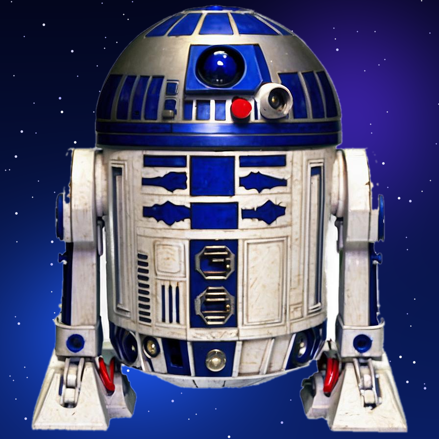
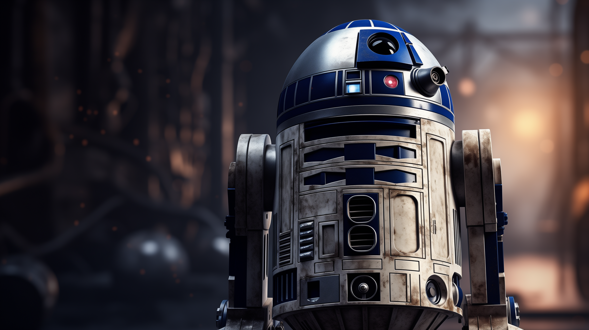

R2D2

R2-D2, um dos droides mais corajosos e inteligentes de toda a galáxia. Conhecido por sua lealdade, determinação e habilidades extraordinárias, esse pequeno droide astromecânico desempenhou um papel fundamental em acontecimentos que mudaram o destino de inúmeros planetas. Sua trajetória começou a ganhar destaque durante a invasão de Naboo, quando conseguiu reparar uma nave real em pleno combate espacial, salvando seus ocupantes de uma destruição quase certa. Ao longo dos anos, serviu a figuras importantes como Padmé Amidala, Anakin Skywalker e Luke Skywalker, demonstrando habilidades incríveis em manutenção de naves, navegação, computação e resolução de problemas. Durante as Guerras Clônicas, acompanhou Anakin em diversas missões perigosas, tornando-se um companheiro indispensável. Mais tarde, recebeu da Princesa Leia os planos secretos da Estrela da Morte, desempenhando um papel decisivo na luta contra o Império Galáctico. Ao lado de seu inseparável amigo C-3PO, participou de inúmeras aventuras, enfrentando inimigos e superando desafios aparentemente impossíveis. Apesar de sua aparência simples e de se comunicar por sons eletrônicos, R2-D2 se tornou um verdadeiro símbolo de coragem, amizade e resistência em toda a galáxia...
Saiba mais...